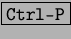

Next: Uso de plantillas:
Up: El documento:
Previous: Trabajar con tablas:
Índice General
Para poder imprimir correctamente un documento se debe tener previamente configurada
la impresora que se vaya a utilizar5.7. Antes de imprimir el documento es conveniente que veamos el aspecto que va
ha tener una vez impreso, para previsualizarlo se pulsa en [Archivo] y después
en [Vista preliminar], en la pantalla aparece una barra de herramientas
donde existen una serie de botones con los que podremos por ejemplo ampliar
el documento, mostrar varias páginas en pantalla, etc. Para ver el documento
se puede pulsar el icono con forma de prismáticos.
Una vez visualizado el documento, para imprimir se selecciona [Archivo]
y después [Imprimir], se puede pulsar el icono de la impresora, abriendose
un cuadro de dialogo en el que se puede ver una serie de opciones de impresión,
impresora, propiedades de la impresora, donde elegiremos el formato del papel,
la orientación, el area de impresión, el número de copias, etc. También se
puede utilizar la serie de teclas 
Proyecto Cursos - LuCAS - http://lucas.hispalinux.es/htmls/cursos.html